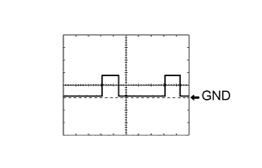
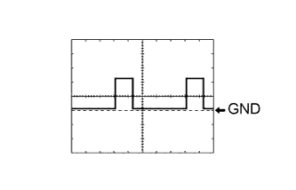

ПРЕДАВАРИЙНАЯ СИСТЕМА БЕЗОПАСНОСТИ > КОНТАКТЫ ЭБУ |
| ПРОВЕРЬТЕ ЭБУ РЕМНЕЙ БЕЗОПАСНОСТИ |
Отсоедините разъемы ЭБУ G117 и G118.
Измерьте напряжение и сопротивление в соответствии со значениями, приведенными в таблице.
| Номера контактов (обозначения) | Цвет проводки | Описание контактов | Условие | Заданные условия |
| G117-7 (+B) - масса | W - масса | Аккумуляторная батарея | Всегда | 11 – 14 В |
| G117-8 (PGND) - масса | W-B - масса | Масса | Всегда | Менее 1 Ом |
| G118-8 (IG1) - масса | G - масса | Питание ЭБУ ремней безопасности | Зажигание включено | 11 - 14 В |
| Зажигание выключено | Менее 1 В |
Подсоедините разъемы G117 и G118 ЭБУ.
Измерьте напряжение в соответствии со значениями, приведенными в таблице.
| Номера контактов (обозначения) | Цвет проводки | Описание контактов | Условие | Заданные условия |
| G117-2 (MOR+) - масса | B - масса | Питание электродвигателя правого ремня безопасности | Зажигание включено | 4,0 - 8,5 В |
| Зажигание выключено | менее 1 В | |||
| G117-1 (MOR-) - масса | LG - масса | Питание электродвигателя правого ремня безопасности | Зажигание включено | 4,0 - 8,5 В |
| Зажигание выключено | менее 1 В | |||
| G117-3 (MOL+) - масса | R - масса | Питание электродвигателя левого ремня безопасности | Зажигание включено | 4,0 - 8,5 В |
| Зажигание выключено | менее 1 В | |||
| G117-4 (MOL-) - масса | G - масса | Питание электродвигателя левого ремня безопасности | Зажигание включено | 4,0 - 8,5 В |
| Зажигание выключено | менее 1 В | |||
| G118-5 (PBK+) - G118-6 (PBK-) | G - R*1 V - P*2 | Сигнал замка ремня безопасности переднего сиденья (со стороны пассажира) | Зажигание включено, ремень безопасности переднего сиденья (со стороны пассажира) пристегнут | Импульсы формируются (см. осциллограмму 1) |
| Зажигание включено, ремень безопасности переднего сиденья (со стороны пассажира) отстегнут | Формирование импульсов (см. осциллограмму 2) | |||
| G118-6 (PBK-) - масса | R - масса*1 P - масса*2 | Сигнал замка ремня безопасности переднего сиденья (со стороны пассажира) | Всегда | Менее 1 Ом |
|  |
С помощью осциллографа проверьте форму сигнала 1.
| Позиция | Описание |
| Контакты для подключения диагностического прибора | G118-5 (PBK+) - G118-6 (PBK-) |
| Настройки прибора | 2 В / дел., 20 мс / дел. |
| Состояние автомобиля | Зажигание включено, ремень безопасности переднего сиденья (со стороны пассажира) пристегнут |
|  |
С помощью осциллографа проверьте форму сигнала 2.
| Позиция | Описание |
| Контакты для подключения диагностического прибора | G118-5 (PBK+) - G118-6 (PBK-) |
| Настройки прибора | 2 В / дел., 20 мс / дел. |
| Состояние автомобиля | Зажигание включено, ремень безопасности переднего сиденья (со стороны пассажира) отстегнут |
| ПРОВЕРЬТЕ ЭБУ ПОМОЩИ ПРИ ДВИЖЕНИИ |

Отсоедините разъем G119 ЭБУ.
Измерьте напряжение и сопротивление в соответствии со значениями, приведенными в таблице.
| Номера контактов (обозначения) | Цвет проводки | Описание контактов | Условие | Заданные условия |
| G119-30 (B) - масса | G - масса | Источник питания | Зажигание включено | 11 - 14 В |
| Зажигание выключено | менее 1 В | |||
| G119-25 (GND) - масса | BR - масса | Масса | Всегда | Менее 1 Ом |
| G119-5 (PBSW) - масса | V - масса | Сигнал выключателя отмены предаварийного включения тормозов | выключатель отмены предаварийного включения тормозов во включенном состоянии | Менее 1 Ом |
| выключатель отмены предаварийного включения тормозов в выключенном состоянии | 10 кОм или более |